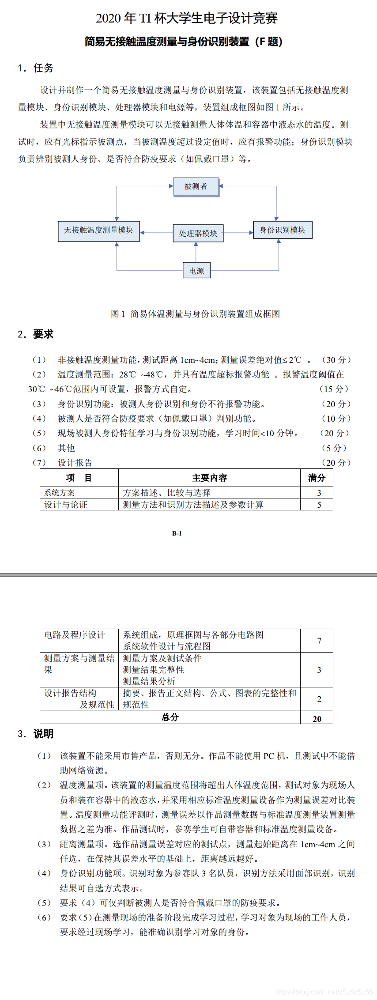
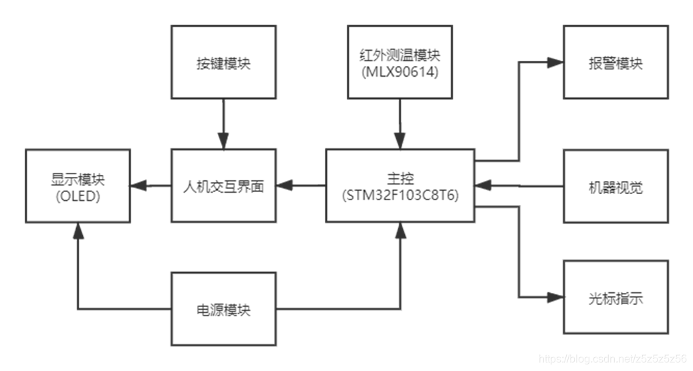
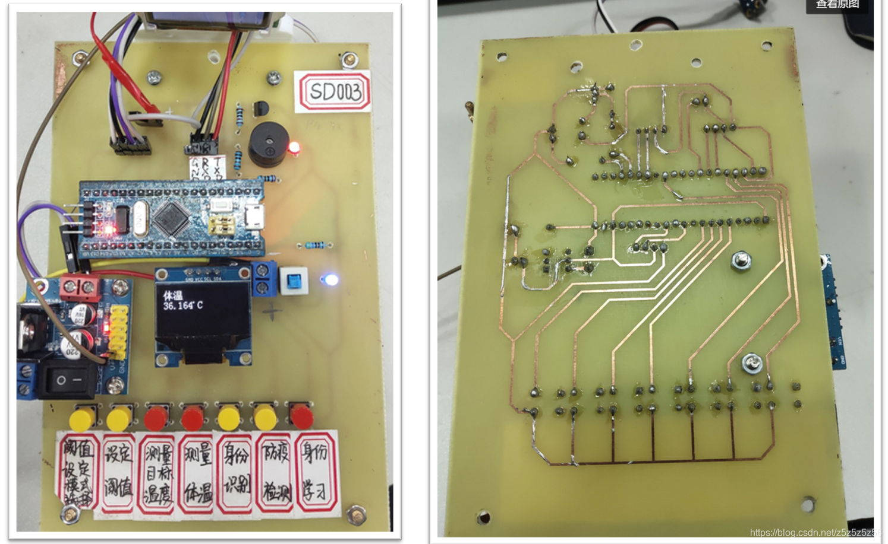
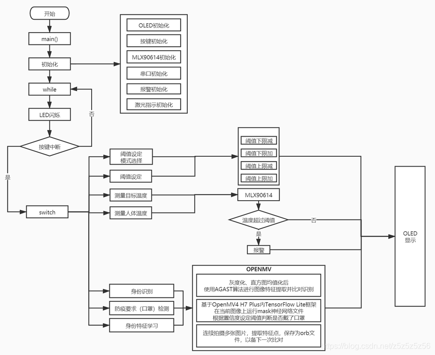

リソースを整理上げて公開することにしました。 partly to share the general approach and partly as a記念です。取り組みんだのは2020年電気竞赛F問題：簡易非接触温度測定と身份認識装置

2020年電気竞赛F問題
全体設計
ハードウェア選定
機械ビジョンモジュールにはOpenMVを使用しました。試合準備の過程でOpenMVの機能で十分だと思っていたのと、当時K210を注文して学習を開始しても到着までに3日かかってしまうため、调试来不及风险太大，所以决定使用OpenMV。

OpenMV H7 Plus
幸いにも最上位モデルのOpenMV H7 Plusを購入し、无事に問題要求の全タスクを完了しました。
温度測定にはMLX90614を使用し、淘宝）で購入したモジュールでI2Cを読んで温度を読み取りました。最後に省一等奖もらえずに省二奖拿了，也是このモジュール不良のせいでした。测试現場で问题が発生し、血の教训！常にPlan B备えましょう！
メインコントローラーにはSTM32C8T6を使用しました。これは赛前准备で既に使用していたためです。他のコントローラーでも可能です。
その他のハードウェアには、OLED（温度しきい値表示）、按钮、有源ブザー、激光ポイントなどが含まれます。
最終的なPCBレイアウトは以下の通りです：

PCBレイアウト
ソフトウェアフロー
STM32とOpenMVはシリアル通信を行います。各モードに対応する文字を定义し、電源を入れるとOpenMVはループ内で文字を待ち受けます。文字を受信すると对应するモード機能を実行し、結果を返回します。ソフトウェアフローチャートを参照してください：

ソフトウェアフローチャート
ビジョンアルゴリズム
私は主にOpenMVのビジョン部分のコードを担当していたので、ここではPythonコード作成の経験谈谈吧。
学習段階で主に参考にした资料はSingTownの2つの関数ライブラリリンクです：
異なる顔を識別（身份認識）
题目拿到后第一反应是中国语入门教程里看到的LBP区别不同人脸的应用。于是第一天也按照手册的思路拍照测试了，但是实际效果并不好，而且受光线和背景影响很大，脸还必须填满摄像头，就很不方便。
后来又发现了特征点算法，运算时间有了很大提升。但还有一个问题就是如果背景拍到的范围过大，那么将从背景提取很多无用的特征点，而要求人保持一定的距离把人脸填满屏幕实在太蠢了。
我的方法是：首先加上了一层人脸识别，将人脸部分局部放大截取出来再拿去提取特征点并进行特征点比对，通过这种方法，就不用对被识别者有很大的要求，实现类似K210一样的功能啦~
以下是代码：
#画出特征点
def draw_keypoints(img, kpts):
if kpts:
print(kpts)
img.draw_keypoints(kpts)
img = sensor.snapshot()
time.sleep(1000)
def find_max(pmax, a, s):
global face_num
if a>pmax:
pmax=a
face_num=s
return pmax
def Distinguish_faces():
global NUM_SUBJECTS
global NUM_SUBJECTS_IMGS
pyb.LED(3).on()
sensor.reset()
sensor.set_contrast(3)
sensor.set_gainceiling(16)
sensor.set_framesize(sensor.VGA)
sensor.set_windowing((240, 240))
sensor.set_pixformat(sensor.GRAYSCALE)
sensor.set_auto_gain(True, gain_db_ceiling = 20.0)
sensor.skip_frames(time = 500)
pmax=0
loop_flag=1
type_flag=0
while(loop_flag):
faces = sensor.snapshot().gamma_corr(contrast=1.5).find_features(image.HaarCascade("frontalface"))
lcd.display(sensor.snapshot())
if faces:
largest_face = max(faces, key = lambda f: f[3] * f[3])
img=sensor.get_fb().crop(roi=largest_face)
kpts1=img.find_keypoints(max_keypoints=90, threshold=0, scale_factor=1.3)
if(type(kpts1).__name__=='kp_desc'):
type_flag=1
else:
print("kpts1 type wrong")
type_flag=0
else:
print("find no face")
if type_flag:
loop_flag=0
lcd.display(img)
draw_keypoints(img, kpts1)
num=0
kpts2=None
feature_values=[0]
for s in range(1, NUM_SUBJECTS+1):
match_count = int(0)
angle_count=0
for i in range(2, NUM_SUBJECTS_IMGS+1):
kpts2=image.load_descriptor("/keypoints/s%s/%s.orb"%(s,i))
match_count+=image.match_descriptor(kpts1, kpts2).count()
print("Average match_count for subject %d: %d"%(s, match_count))
pmax = find_max(pmax, match_count, s)
feature_values.append(match_count)
feature_sum=0
for feature_value in feature_values:
print("feature_value is %d" % feature_value)
n=len(feature_values)-1
feature_sum+=feature_value
average=feature_sum/n
print("average is %d" % average)
pow_sum=0
for feature_value in feature_values:
if feature_value==0:
feature_value=average
print("variance:%d" % math.pow(feature_value-average,2))
pow_sum+=math.pow(feature_value-average,2)
variance=pow_sum/n
print("variance is %d" % variance)
if variance<1500:
uart.write(str(0))
print("unknown person !")
else:
uart.write(str(face_num))
print("The most similar person is:%d"%face_num)
lcd.clear()
pyb.LED(3).off()コードには还有很多其他细节。例如最后加了方差计算，使得识别陌生人脸更准确。如果拍摄的特征点与内存中存储的三个人的特征点比对结果都差不多（方差小），那就很可能不是三个人中的一个人，而是陌生人。这个方差阈值是经过实践得出的，根据光线可能需要不同调整。
总结（速成版本，系统学习理论请参考其他大佬）：
- LBP 局部二值模式： 采集一定数量的模板 pgm 图片数据。进行人脸识别时，将读取到的图片与模板数据库进行相似度比较，从中选取最高相似度的模板，从而确定被测人信息。
- 特征点 AGAST 算法： 多尺度快速角点特征提取算法。提前保存目标特征 orb 文件。进行人脸识别时，提取目标的特征点与特征点库进行匹配得出结果，经过方差计算判断可信度后得出结果。
口罩识别
两种模型引申出的两种不同方法：
- 第一种： 用 Haar 算子，将 XML 类型的文件转为 cascade 格式，然后识别。缺点是少量样本训练的口罩模型在识别过程中准确度较低。
- 第二种： 使用内置的 TFLite 神经网络框架运行。现在 OpenMV 手册已经有 TFLite 口罩识别模型，识别结果大幅提高。
现场学习
由于使用特征点，现场学习不过就是把拍摄、提取特征点、文件保存放到现场进行罢了。在我这套逻辑下现场学习并没有多出多少难度，我们现场拍摄20张够够的了。
#特征学习
def machine_learning():
sensor.reset()
sensor.set_contrast(3)
sensor.set_gainceiling(16)
sensor.set_framesize(sensor.VGA)
sensor.set_windowing((240, 240))
sensor.set_pixformat(sensor.GRAYSCALE)
sensor.set_auto_gain(True, gain_db_ceiling = 20.0)
sensor.skip_frames(time = 2000)
global NUM_SUBJECTS_IMGS
global NUM_SUBJECTS
print("last NUM_SUBJECTS =%d" % NUM_SUBJECTS)
NUM_SUBJECTS=NUM_SUBJECTS+1
print("now NUM_SUBJECTS =%d" % NUM_SUBJECTS)
p_num=NUM_SUBJECTS_IMGS
s=NUM_SUBJECTS
kpts1 = None
while(p_num):
pyb.LED(1).on()
faces = sensor.snapshot().gamma_corr(contrast=1.5).find_features(image.HaarCascade("frontalface"))
lcd.display(sensor.snapshot())
lcd.clear()
if faces:
largest_face = max(faces, key = lambda f: f[3] * f[3])
img=sensor.get_fb().crop(roi=largest_face)
lcd.display(img)
kpts1 = img.find_keypoints(max_keypoints=90, threshold=0, scale_factor=1.3)
if (kpts1 == None):
print("Couldn't find any keypoints!")
else:
draw_keypoints(img, kpts1)
lcd.display(img)
image.save_descriptor(kpts1, "keypoints/s%s/%s.orb"%(s,p_num))
img.save("keypoints/s%s/%s.pgm"%(s,p_num))
p_num-=1
print(p_num)
pyb.LED(1).off()
pyb.LED(3).on()
sensor.skip_frames(time = 50)
pyb.LED(3).off()
uart.write(str(9))
else:
print("find no face")
pyb.LED(2).on()
sensor.skip_frames(time = 100)
pyb.LED(2).off()
sensor.skip_frames(time = 100)
pyb.LED(2).on()
sensor.skip_frames(time = 100)
pyb.LED(2).off()
lcd.clear()
uart.write(str("f"))其他优化算法
为了让OpenMV能获得好的结果真的很努力呢哈哈哈
- 直方图均值化：
.histeq(adaptive=True, clip_limit=3)直方图均值化后，灰度直方图几乎覆盖了整个灰度的取值范围，除了个别灰度值的个数较为突出，整个灰度值分布近似于均匀分布，经过这样处理的图像将具有较大的灰度动态范围和较高的对比度，图像的细节更为丰富。 - 局部放大后识别：
sensor.get_fb().crop(roi=largest_face)首先利用固件库自带人脸Haar模型进行识别人脸，识别后截取人脸部分再进行特征点比对，这将提高精确度并减少运算量。 - 自动增益：
sensor.snapshot().gamma_corr(contrast=1.5)伽马校正用于修正图像中色彩和对比度，数值越高图像越亮
总的来说那两天是把Micropython函数库翻了一遍，能试的都一个个试过去了，这几个是对结果确实有帮助的函数。
总结
我们最终获得了福建省二等奖。由于送测的时候90614模块出了问题，测温爆炸，反而其他部分包括视觉部分都是满分，遗憾没有省一，就当吸取要准备Plan B的教训了害。
关于OpenMV部分代码，主要内容都在上面一段一段都po出来了，口罩识别见链接官方有。以上都写出了要点，足够有能力的同学可以复现。
欢迎在评论区学习讨论，遇到问题的解决和互相交流分享经验，不提供硬件和软件工程代码！！